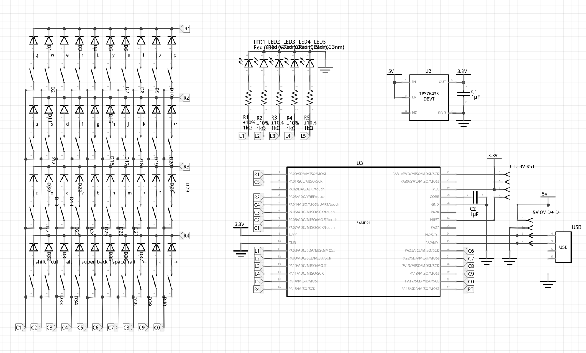

Design Files and Schematic¶
Published on 2020-08-12 in Dorsch 40k Keyboard.
I have now fixed the two problems I found with the PCB, and uploaded the Gerbers and the Fritzing files. The keyboard uses the same bootloader and CircuitPython firmware as the Fluff M0 — that’s the convenience of having a board that breaks out all the pins.
I’m still working on the Python code for the mod keys, of course — I will post it separately when it’s ready.
Here’s the schematic of the keyboard:
